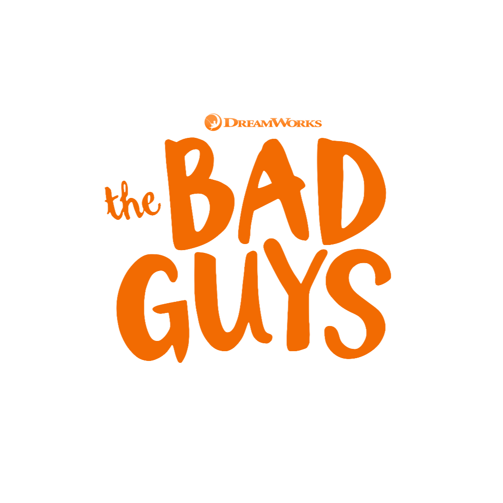

After a lifetime of legendary heists, notorious criminals Mr. Wolf, Mr. Snake, Mr. Piranha, Mr. Shark and Ms. Tarantula are finally caught. To avoid a prison sentence, the animal outlaws must pull off their most challenging con yet — becoming model citizens. Under the tutelage of their mentor, Professor Marmalade, the dubious gang sets out to fool the world that they're turning good.
Watch Now On Netflix